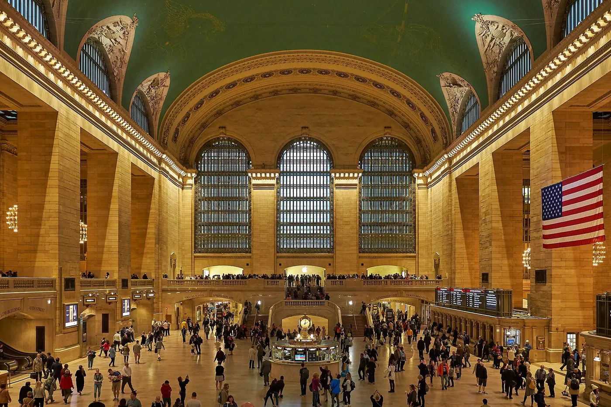

Two days. One train. A different pace.
New York is a great city and a terrible place to spend every weekend. These are the trips worth the train fare — planned around what actually fits into two or three days.
Three weekends worth booking now
Each guide covers how to get there, what to do with two days, what it costs and the one mistake to avoid.
Weekends are a different kind of travel
A two-day trip is not a short holiday. It is a tight loop: one train out, one base, two walks, one good dinner, one train back. Most guides ignore that shape and hand you a ten-item checklist.
We plan around the journey first. If the train is four hours each way, the trip needs a night — or it needs a different destination. Every guide says which one it is, what the fare really looks like, and what to skip.

Five places worth the journey
Ranked by how much weekend you get for the travel time.
Hudson Valley
Art, river towns and the easiest car-free weekend from the city.

Philadelphia
The most walkable big-city weekend on the East Coast.
Boston
Compact, historic and best on foot from Back Bay.

Washington, D.C.
Museums, the Mall and a city that rewards an early start.

Niagara Falls
The one trip on this list that needs two nights, not one.
Pick a direction, not a checklist
Start with how long you have and how far you are willing to travel. The rest follows.